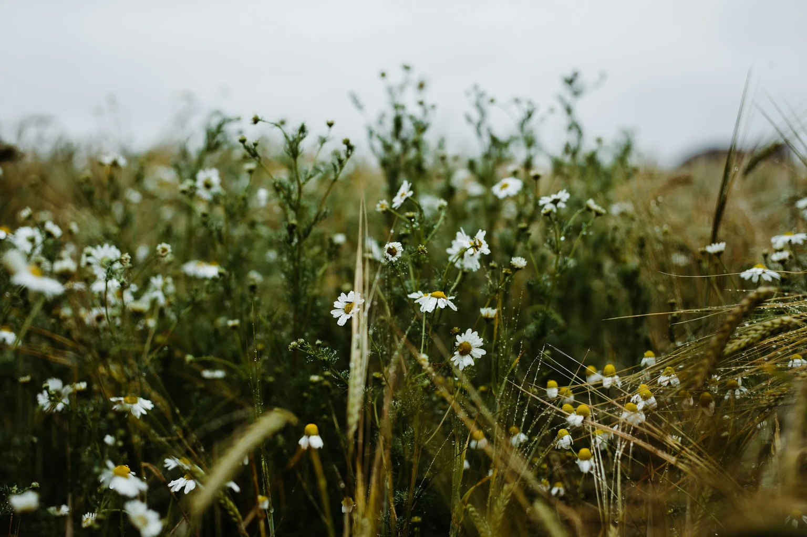
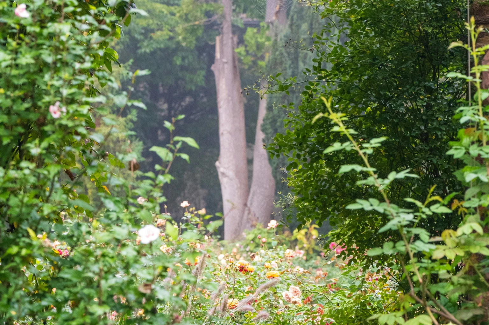
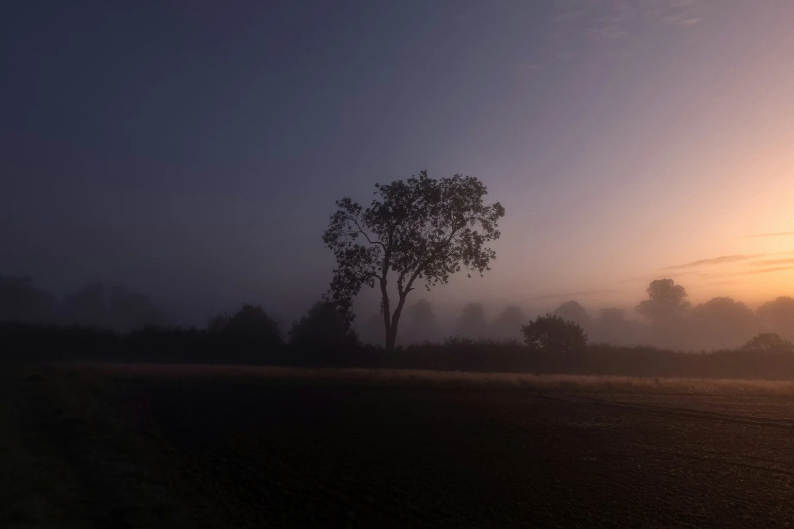

The gallery
What the morning could feel like.
From quiet fields at dawn to garden flowers, these nature photographs capture the feeling behind a Bridal Flow morning.





Photo credits
Nature photographs from Unsplash, used under the Unsplash License.
A morning made around you.
A light-filled room, a sheltered terrace or a quiet corner of your venue. We’ll work with your space and schedule to create a welcoming session for your favourite people. Choose gentle relaxation, strength and mobility, or a little of both.
Let the morning be yours
Begin with a beautiful pause.
Tell us where and when you're getting married. We’ll help you find the right experience, with no pressure to book.
Enquire about your wedding morning